WSL 新手入门指南（很详细） @
摘要 @
对于很多初学 linux 的人来说，快速的在 windows 操作系统中搭建一个 linux 学习环境是很有必要的。
很多人会尝试使用类似 VM 的虚拟机管理软件来装一个 linux 系统环境，但整个安装过程较为繁琐，而 wsl 则提供了另一种选择。
何为 WSL？ @
按照官方的解释。
WSL（适用于 Linux 的 Windows 子系统 ）是 Windows 的一项功能，可用于在 Windows 计算机上运行 Linux 环境，而无需单独的虚拟机或双引导。 WSL 旨在为希望同时使用 Windows 和 Linux 的开发人员提供无缝高效的体验。
那优点自不必多说
- 无需单独的虚拟机或引导
- 可以同时使用 windows 和 linux
- 为开发人员提供无缝高效的体验
WSL 版本差别 @
wsl 目前分为两个版本： wsl1 和 wsl2，具体的差别在官方文档已经说明了，我直接拿过来讲下。
| 功能 | WSL 1 | WSL 2 |
|---|---|---|
| Windows 和 Linux 之间的集成 | ✅ | ✅ |
| 启动时间短 | ✅ | ✅ |
| 与传统虚拟机相比，占用的资源量少 | ✅ | ✅ |
| 可以与当前版本的 VMware 和 VirtualBox 一起运行 | ✅ | ❌ |
| 托管 VM | ❌ | ✅ |
| 完整的 Linux 内核 | ❌ | ✅ |
| 完全的系统调用兼容性 | ❌ | ✅ |
| 跨 OS 文件系统的性能 | ✅ | ❌ |
| systemd 支持 | ❌ | ✅ |
| IPv6 支持 | ✅ | ✅ |
通过对比可以看到，wsl2 支持了完整的 linux 内核，并且拥有完全的系统调用兼容性，也支持 systemd 管理后台进程。
仅仅在跨 OS 文件系统性能层面慢了点，但这点实际上是问题不大的，毕竟我们不需要频繁的从 windows 拷贝大文件到 linux 系统上。
wsl2 支持完整的 linux 内核，也说明 wsl2 是可以安装 docker 的，而 wsl1 无法实现，这对于后期学习 docker 的同学来说，毫无疑问装 wsl2 才是正确的选择。
安装 @
首先 wsl 在 Windows 10 版本 2004 及更高版本（内部版本 19041 及更高版本）或 Windows 11 是默认开启的，如果 windows 版本比较老，我推荐大家升级以下 windows，这都 2025 年了，不会还有 win10 以下的系统吧？
首先打开 PowerShell (win10 以上应该自带这个终端)
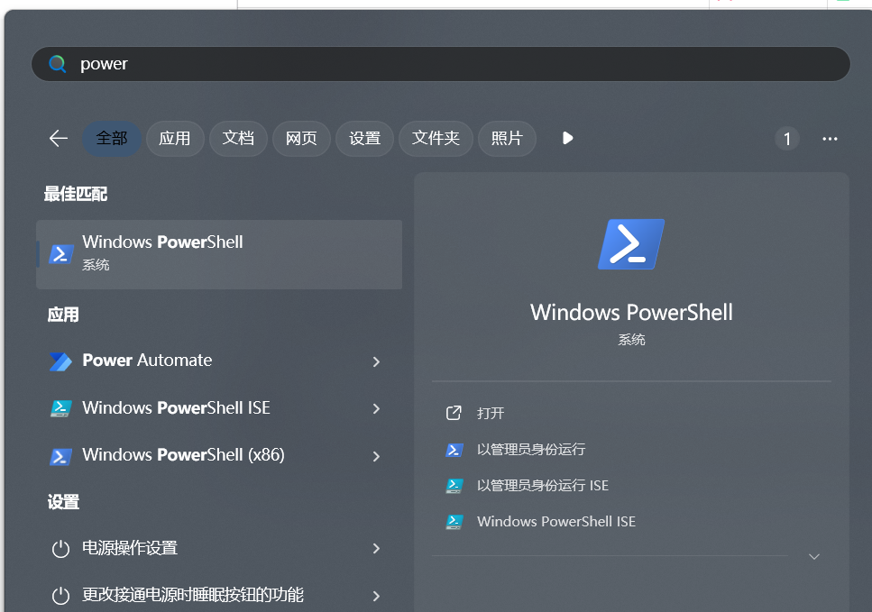
输入命令： wsl –install 开始安装 wsl
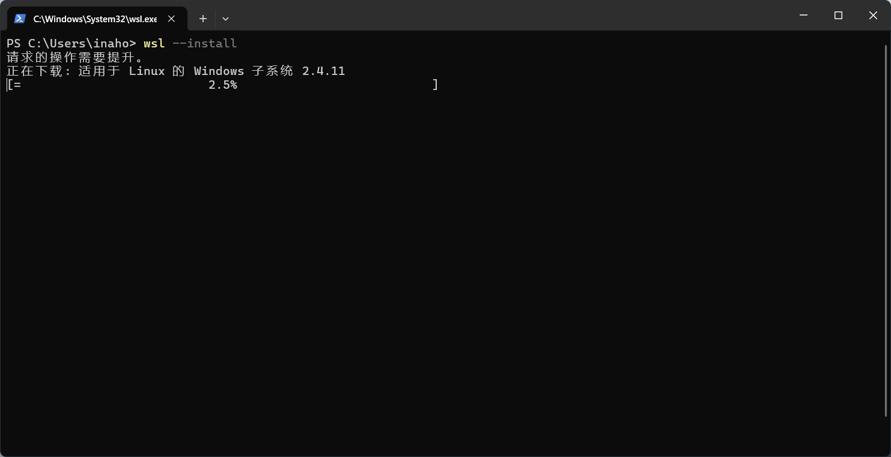
等待一会，直到安装完成，这个下载速度比较慢，可能 wsl 安装包在国外服务器。
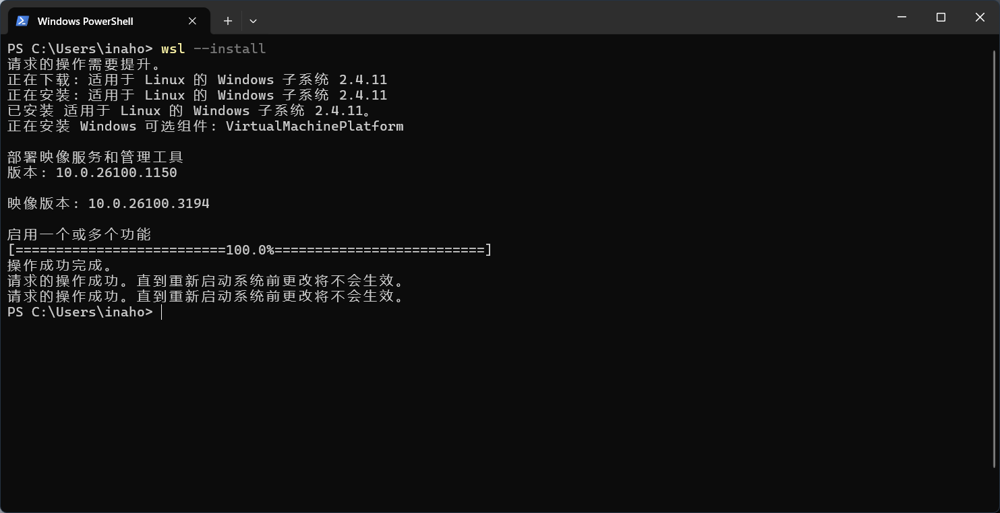
它告诉我们要重启系统，那我们先重启。
重启完成后，重新打开 PowerShell，然后输入命令： wsl -v 测试下有没有安装完成
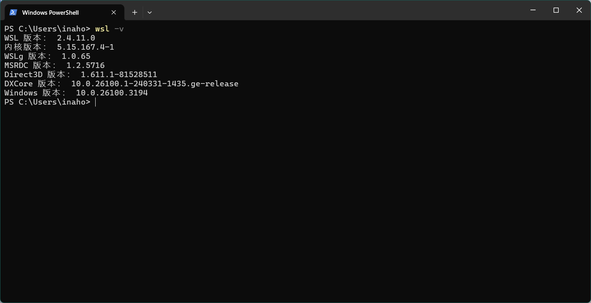
可以看到 WSL 的版本信息，说明 wsl 我们安装完成了
安装虚拟机 @
前一步既然安装好了 wsl，但我们要知道刚刚安装的只是一个用于管理虚拟机的工具而已。
接下来一步还需要完成虚拟机的安装。
首先通过命令来查看当前可用的 linux 发行版列表
wsl -l -o #查看可用linux发行版列表
如果报错无法建立链接，别担心，因为国内被墙了，导致 dns 无法解析 raw.githubusercontent.com 域名。
无法从“https://raw.githubusercontent.com/microsoft/WSL/master/distributions/DistributionInfo.json”中提取列表分发。无法与服务器建立连接
错误代码: Wsl/WININET_E_CANNOT_CONNECT
我们只需要查到raw.githubusercontent.com域名对应的ip地址, 填到C:\Windows\System32\drivers\etc\hosts文件里即可。
首先进到 C:\Windows\System32\drivers\etc 目录，找到 hosts 文件，右键-> 属性，安装下图指示，选择你登录的用户，然后授权修改和写入的权限即可。
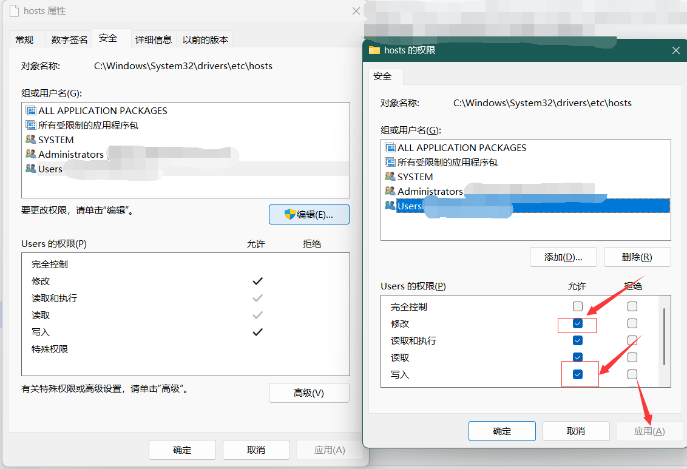
在 hosts 文件的最后一行，加入域名对应的 ip。
185.199.109.133 raw.githubusercontent.com
再次在 PowerShell 输入命令，即可看到
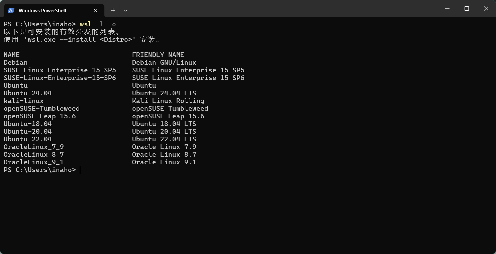
到此，我们已经可以连通微软的镜像仓库了，那接下来就是下载镜像、装系统了，可以通过下面命令安装系统。
wsl --install -d ubuntu # 安装ubuntu发行版
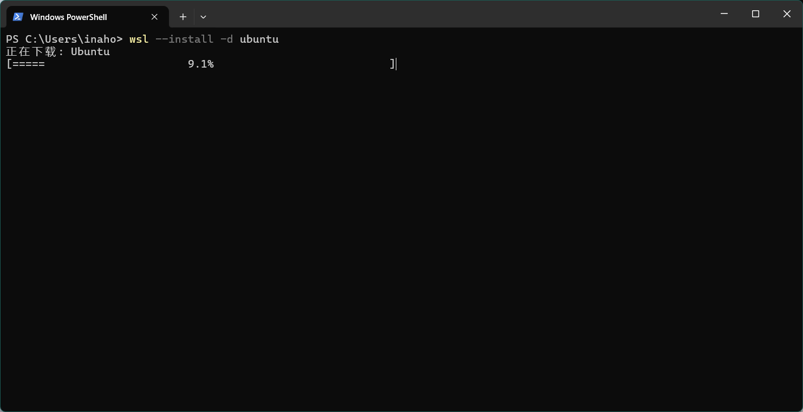
等待下载完成。。。
安装完成后，可以看到下面的提示。
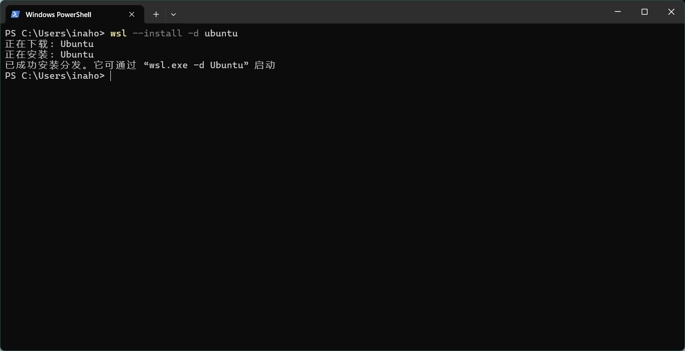
然后可以输入命令来查看和管理我们安装的系统。
wsl --list --all #查看所有安装的分发版本
wsl --list --running #查看正在运行的分发版本
wsl --unregister ubuntu #删除指定的发布版本
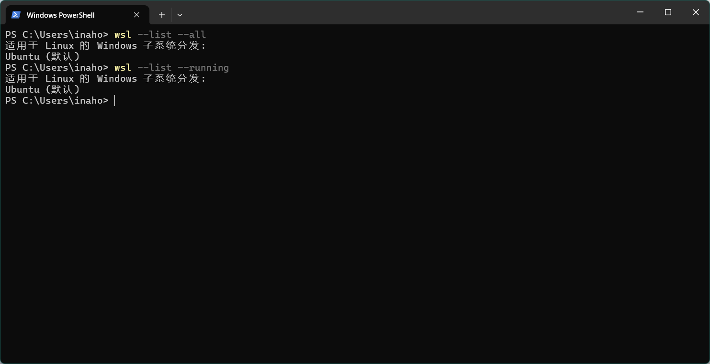
至此，我们的子系统已经安装好了。
使用子系统 @
现在通过开始菜单的搜索，已经可以搜索到有一个 Ubuntu 的应用。
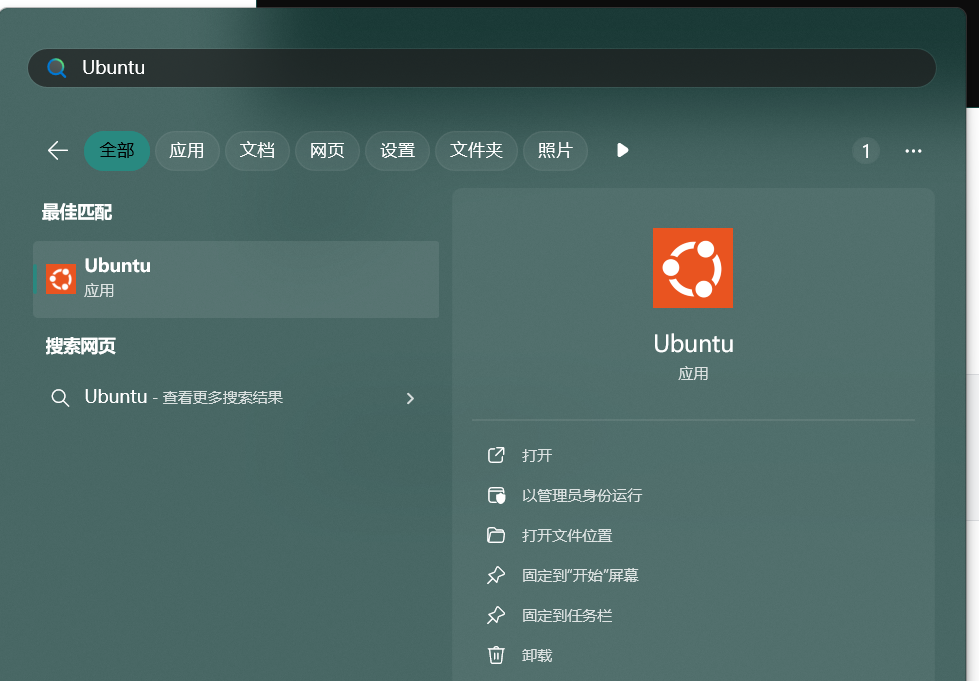
点开后，就到了首次进入系统的配置操作，主要配置登录的账户和密码
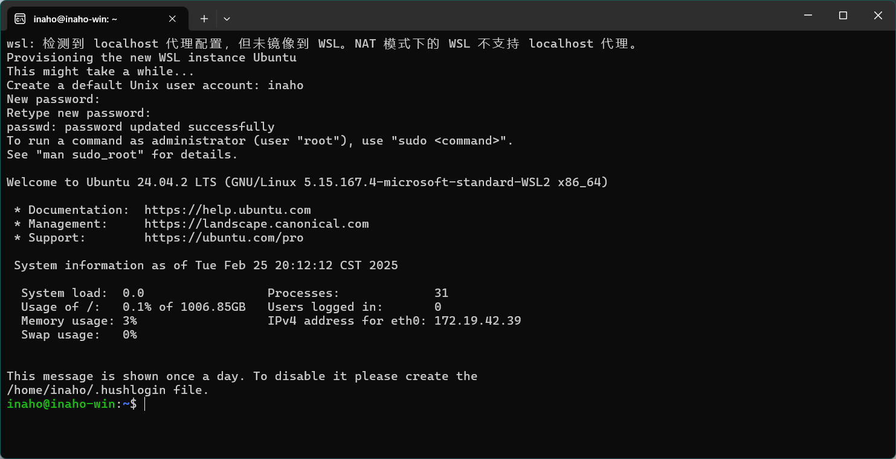
如果忘了自己配置的密码，怎么改密码呢？
很简单，进入 PowerShell 终端，输入如下面命令修改密码
#重置root密码，终端输入命令
wsl.exe --user root
root: passwd root
如何从 windows 传文件到子系统 @
打开文件资源管理器，输入 \wsl$ 即可定位到子系统的目录中，然后要传到哪个文件夹，直接拖过去即可。
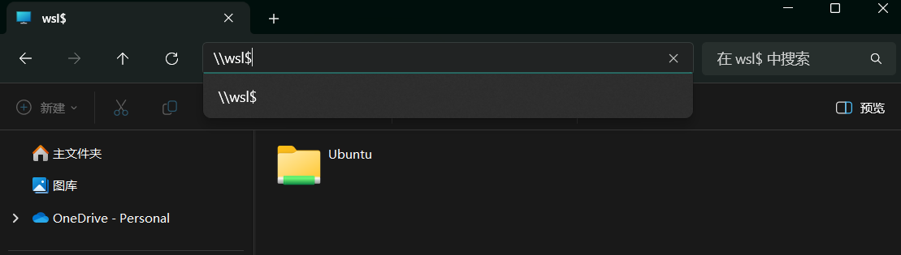
结尾 @
至此，安装子系统的教程到此结束！
你可以愉快的在 ubuntu 子系统中学习 linux 基础知识了！